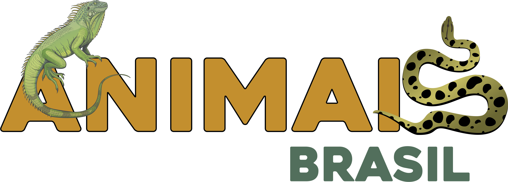
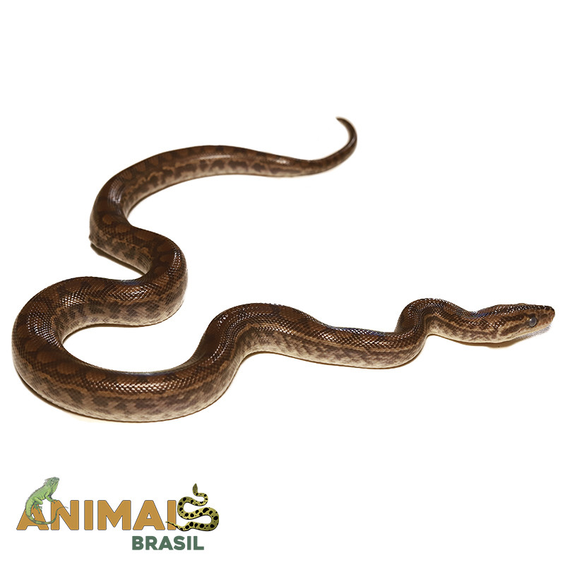

Animais Brasil
Jiboia arco-íris do Norte - (Epicrates cenchria maurus) AR020
As E. maurus costumam apresentar coloração marrom acinzentada na lateral do corpo com ocelos laterais circulares em tons escuros de marrom. Os filhotes apresentam ocelos dorsais bem marcados contornados por linhas marrons. Ocorre nesta espécie variação ontogenética, na qual as marcações dorsais dos filhotes costumam desaparecer nos adultos.
DISPONIVEL
R$ 3.500,00

